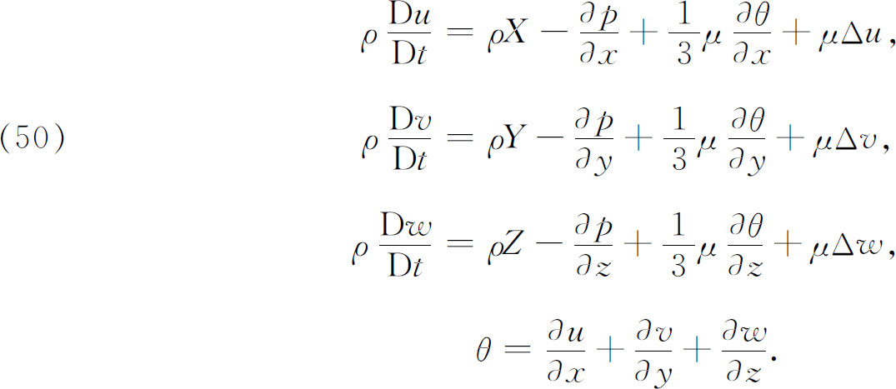
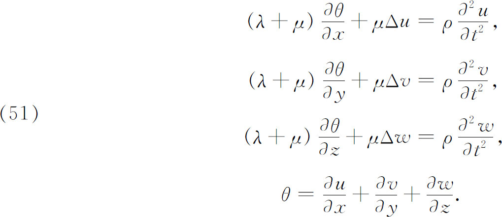
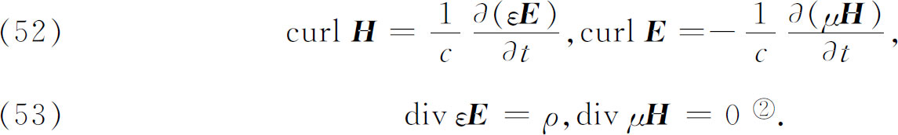
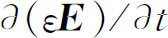

7．偏微分方程组
18世纪时，流体运动的微分方程显现为第一个重要的偏微分方程组。19世纪时创建了三个更为基本的方程组：黏性介质的流体动力方程、弹性介质方程和电磁理论方程。
当有黏性出现时（实际上总是这样），流体运动方程的获得经历了曲折的途径。欧拉已经给出了无黏性流体运动的方程。从拉格朗日所处的时代起，就已经认识到有速度位势存在和无速度位势存在的流体运动之间的本质差别。经与弹性理论的形式类比和分子受排斥力激活的假设的启发，多科工艺学校和交通工程学校的力学教授纳维（Claude L．M．H．Navier，1785—1836）在1821年得到了基本方程(30)。像今天被确认的那样，纳维-斯托克斯方程是

其中Δ有通常意义；ρ是流体的密度；p是压力；u，v，w是流体在时刻t时，在任一点（x，y，z）处的速度分量；X，Y，Z是一个外力的分量；常数μ依赖于流体的性质，叫做黏性系数；导数D/Dt具有第22章第8节解释的意义。对于不可压缩的流体，θ＝0。
这些方程也被泊松在1829年(31)得到。之后，又被剑桥大学数学教授斯托克斯（1819—1903）在他的论文《关于运动流体内部摩擦的理论》（On the Theories of the Internal Friction of Fluids in Motion）(32)中根据连续介质力学重新导出。斯托克斯力图说明在所有已知液体中的摩擦作用，它把动能转化为热而引起运动衰减。液体由于其黏性而附着于固体的表面，因而对它们作用着切向力。
弹性的学科是由伽利略、胡克、马略特奠基的，而由伯努利家族和欧拉培育的。但这些人只处理了一些特殊问题。为了解决这些问题，他们关于梁、杆和板在应力、压力或荷载下是怎样变动的提出了专门的假设。严格意义上的理论是19世纪创立的。从19世纪初叶起，许多伟大人物持续地致力于获得主宰弹性介质（包括空气）的行为的方程。这些人主要是工程师和物理学家。在他们之中柯西和泊松是大数学家，虽然柯西按其所受的训练来说是个工程师。
弹性问题包括：物体在应力下的行为，其中要考虑它们将取什么平衡位置；物体在一个初始扰动或一个连续作用力驱动时的振动；以及在空气或固体的情形下，波通过它们的传播。在19世纪，大约在1820年，出现了由物理学家托马斯·杨（Thomas Young，1773—1829）和工程师菲涅耳（Augustin Jean Fresnel，1788—1827）开创的光的波动理论，于是对弹性学的兴趣就增浓了。光被看作是波在以太中的运动，而以太被认为是一种弹性介质。因此光通过以太的传播就成为一个基本问题。19世纪初期，对弹性学引起强烈兴趣的另一个刺激是奇洛德尼（Ernst F． F．Chladni，1756—1827）关于玻璃和金属的振动的实验（1787），他指出了波节线。这些应与声音有关，例如与振动鼓面发出的声音有关。
求得弹性学基本方程的工作是长期的和充满陷阱的，因为对于物质内部或分子结构知道得很少，所以把握任何物理原理都是困难的。对于固体、空气、以太所作的假设随着作者的不同而不同，并且是互相争执着的。对于以太的情形，人们推测它是穿过固体的，因为光线通过某些固体，并被另一些固体所吸收，而以太分子同固体分子的关系也提出了极大的困难。我们不打算追究弹性体的物理理论，即使今天我们的理解也是不完全的。
纳维(33)是第一个（1821）研究弹性体平衡和振动的普遍方程的人。他把材料假设为各向同性，因而各方程只包含表示物体性质的单独一个常数。到1822年，经菲涅耳工作的刺激，柯西开辟了另一条通向弹性理论的途径(34)。柯西的方程包含表示物体材料的两个常数，对各向同性的物体来说，其方程是

这里u，v，w是位移分量，θ叫做膨胀系数，λ和μ是物体或介质的常数。对一般的非各向同性介质来说，方程是十分复杂的，而把它们普遍地写出来可能是乏味的。这些方程是由柯西给出的(35)。
19世纪对科学和技术带有巨大冲击的最壮观的胜利是麦克斯韦在1864年关于电磁学规律的导出(36)。麦克斯韦利用无数先辈们特别是法拉第（M．Faraday）关于电和磁的研究引入了位移电流的概念———无线电波是位移电流的一种形式———并且用这个概念确切地表述了电磁波的传播。他的方程有四个，最方便的是用后来为亥维赛（Oliver Heaviside）采用的向量形式叙述，包含电场强度E、磁场强度H、介电系数ξ、介质的磁通率μ和电荷密度ρ。这些方程是

关于curl和div的意义见第32章第5节。
前两个方程是主要的方程，等于六个标量（非向量）的偏微分方程，位移电流是

。正是对这些方程的研究，使麦克斯韦预言电磁波以光速通过空间。基于两速度相同，他勇敢地断言光是电磁现象。这是一个从他那时代起已被详尽地证实了的预言。
大家知道，没有解任何上述方程组的普遍方法。然而，19世纪的人们渐渐认识到在偏微分方程的情形下，不管是单个方程还是方程组，通解几乎不像初始条件和边界条件已给定的特殊问题的解有用，在这种情形下实验工作也可能帮助做出有用的简化假定。傅里叶、柯西、黎曼的著作促进了这事的实现。关于使这些方程组特殊化的许多初值和边值问题的求解工作是大量的，在这世纪中几乎所有的数学家都研究过这类问题。